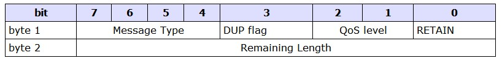

MQTT入门
Table of Contents
- 1. + 参考文档
- 2. 关键词解释
- 3. MQTT V3.1协议规范摘要
- 4. mqtt协议详解
- 5. 命令消息
- 5.1. CONNECT - 客户端请求连接服务器
- 5.2. CONNACK - 连接确认
- 5.3. PUBLISH - 发布消息
- 5.4. PUBACK - 发布确认
- 5.5. PUBREC - 发布接收（有保证的交付第1部分）
- 5.6. PUBREL - 发布释放（有保证的交付第2部分）
- 5.7. PUBCOMP - 发布完成（有保证的交付第3部分）
- 5.8. SUBSCRIBE - 客户端订阅主题
- 5.9. SUBACK - 订阅确认
- 5.10. UNSUBSCRIBE - 客户端取消订阅主题
- 5.11. UNSUBACK - 取消订阅确认
- 5.12. PINGREQ - PING请求
- 5.13. PINGRESP - PING回复
- 5.14. DISCONNECT - 断开连接通知
- 6. 消息流
- 7. mosquitto实战
1 + 参考文档
http://www.cnblogs.com/shanyou/p/4085802.htmlx http://public.dhe.ibm.com/software/dw/webservices/ws-mqtt/mqtt-v3r1.html
2 关键词解释
- MQTT
Message Queuing Telemetry Transport，消息队列遥测传输,是IBM开发的一个即时通讯协议, 被用来当做传感器和致动器（比如通过Twitter让房屋联网）的通信协议。
- Qos
QoS（Quality of Service）服务质量，是网络的一种安全机制， 是用来解决网络延迟和阻塞 等问题的一种技术。 在正常情况下，如果网络只用于特定的无时间限制的应用系统，并不需要QoS， 比如Web应用，或E-Mail设置等。但是对关键应用和多媒体应用就十分必要。当网络过载或拥塞时， xQoS 能确保重要业务量不受延迟或丢弃，同时保证网络的高效运行。
- Pub
发布消息相关
- Sub
订阅消息相关
3 MQTT V3.1协议规范摘要
- 摘要
MQTT是一个轻两量界级的基于代理的发布/订阅式消息传输协议，它的设计目标是开放，简单，轻量和 易于实现，这些特征使它适用于各种受限制环境。比如：网络不可靠或低带宽环境中，硬件资源紧张的 嵌入式设备中
- 特性
1 使用发布/订阅消息模式，提供一对多的消息发布 2 消息传输对有效负载内容不可知 3 使用TCP/IP提供基础网络链接
- Qos的三个级别
1 至多一次：消息可能丢失。比如环境传感器数据 1次/分，丢失一次也无所谓，下条很快又来了 2 至少一次： 无论如何都要确保消息的到达，消息可能重复发生 3 只有一次： 无论如何都要确保消息到达有且只能有一次。比如：计费系统，重复或者丢失都是错误的。
- 轻量传输
固定头部只有2个字节，开销很小，降低了网络流量
- 代理
- 发布
- 订阅
4 mqtt协议详解
4.1 协议格式
MQTT命令消息一般组成结构： 固定头部 + [可变头部] + [ 有效载荷] 有效载荷：也称为消息体 固定头部：一定有 可变头部和消息体：只有某些特定的类型消息才有
4.2 固定头部

Byte 1：
包含消息类型和标志字段
Byte 2：
包含剩余长度字段（至少1个字节，最多4个字节），以大端模式存储的（高字节->内存低地址）
字节范围[ 2 - 5 字节]
- MessageType ( byte 1，bits 7-4 ）
占4 bit，0和15为保留数值
0 => // 保留字
1 => "CONNECT" // 客户端请求连接服务器
2 => "CONNACK" // 连接确认
3 => "PUBLISH" // 发布消息
4 => "PUBACK" // 发布确认
5 => "PUBREC" // 发布接收（有保证的交付第1部分）
6 => "PUBREL" // 发布释放（有保证的交付第2部分）
7 => "PUBCOMP" // 发布完成（有保证的交付第3部分）
8 => "SUBSCRIBE" // 客户端订阅请求
9 => "SUBACK" // 订阅确认
10 => "UNSUBSCRIBE" // 客户端取消订阅请求
11 => "UNSUBACK" // 取消订阅确认
12 => "PINGREQ" // PING请求
13 => "PINGRESP" // PING响应
14 => "DISCONNECT" // 客户端断开连接
15 => // 保留字
- DUP flag ( byte 1，bits 3 ）
服务器试图重发PUBLISH、PUBREL，客户端试图重发SUBSRIBE、UNSUBSCRIBE消息时， 该标志位要被置位（即设为1）。这适用于消息的QoS标志值大于0的情况，此时消息确认是必需的。 当DUP位被置位时，可变头部将包含一个消息ID。
- Qos level ( byte 1，bits 2-1 ）
该标志位标明 PUBLISH 消息的交付质量级别。具体的QoS级别如下表所示。 00 0 <=1 至多一次：消息可能丢失。比如环境传感器数据 1次/分，丢失一次也无所谓，下条很快又来了 01 1 >=1 至少一次： 无论如何都要确保消息的到达，消息可能重复发生 10 2 =1 只有一次： 无论如何都要确保消息到达有且只能有一次。比如：计费系统，重复或者丢失都是错误的。 11 3 保留
- Retain ( byte 1，bits 0 ）
该标志位只用于PUBLISH消息。当一个客户端发送一条PUBLISH消息给服务，假设该该消息所属的主题 (topic)为topicA，如果该标志位被置为（1），服务器在将该消息发布给当前的所有topicA订阅者 之后，还应该保持这条消息。 当topicA出现了一个新的订阅者，则topicA的最后一条保持消息应当分发给该订阅者。如果不存在保持 消息，则什么也不用做。 一句话：当消息发布者发消息的间隔比较长，该位为1，可以让新的订阅者立马收到历史消息的最后一条。 当服务器收到新消息时，在给客户端发送前，将该位清0（即不置位） 如果是保持消息（1），应当服务器重启之后仍能保留。 如果服务器收到消息体长度为0，则可以删除该保持消息。
- byte2 - byte5( 剩余长度 )
该字段表示当前消息的剩余内容的字节数，包括可变头部和有效载荷（消息体）的数据。 该字段本身的字节数是根据可变头部和有效载荷的长度不同而变化的。 每个字节编码7-0bit的值（127）和一个“延续位”
byte 2
| 31 | 30 | 29 | 28 | 27 | 26 | 25 | 24 |
|---|---|---|---|---|---|---|---|
| 1 | 1 | 1 | 1 | 1 | 1 | 1 | 1 |
27-1=0X
byte 3
| 31 | 30 | 29 | 28 | 27 | 26 | 25 | 24 |
|---|---|---|---|---|---|---|---|
| 1 | 1 | 1 | 1 | 1 | 1 | 1 | 1 |
byte 4
| 31 | 30 | 29 | 28 | 27 | 26 | 25 | 24 |
|---|---|---|---|---|---|---|---|
| 1 | 1 | 1 | 1 | 1 | 1 | 1 | 1 |
byte 5
| 31 | 30 | 29 | 28 | 27 | 26 | 25 | 24 |
|---|---|---|---|---|---|---|---|
| 1 | 1 | 1 | 1 | 1 | 1 | 1 | 1 |
好好理解下，如何计算字节数，编码方案
该编码方案的算法如下所示，输入为一个十进制数（X），输出为编码后的结果。
do
digit = X MOD 128
X = X DIV 128
// if there are more digits to encode, set the top bit of this digit
if ( X > 0 )
digit = digit OR 0x80
endif
'output' digit
while ( X> 0 )
相应地，剩余长度字段的解码算法如下所示：
multiplier = 1
value = 0
do
digit = 'next digit from stream'
value += (digit AND 127) * multiplier
multiplier *= 128
while ((digit AND 128) != 0)
当该解码算法终止，value等于剩余长度的字节数。
可认为剩余长度字段虽然是固定的，即肯定是有的，但该字段的长度却是变化的（1-4字节）。
4.3 可变头部
某些类型的MQTT命令消息还包含了一个可变的头部，它位于固定头部和消息体之间。 可变的剩余字段（1-4字节）不是可变头部的一部分。剩余长度字段的值不包括可变字段的长度， 可变字段的值只包括可变头部和消息体。
- 协议名称（Protocol name）
协议名称字段只用于 MQTT CONNECT 消息的可变头部中。该字段以UTF编码方式显示协议名称：MQIsdp len = 1 - 2 字节 content 3 - 8 字节
- 协议版本（Protocol version）
协议版本字段只用于 MQTT CONNECT 消息的可变头部中。 该字段用8位无符号值来表示客户端所使用的协议修订级别。当前版本协议中该字段的值为3（0x03），如下表所示 协议版本号，v3 也是固定的。 二进制 十进制 00 00 00 11 => 3
- 连接标志 Connect Flag
该字段用于 CONNECT 消息的可变头部中，占1字节，包括Clean session、Will、Will QoS和Retain标志。
- Connect Flag之bit 0
连接标志中的第0位在目前协议版本中没有使用到，保留为将来使用。
- Connect Flag之bit 1 （Clean session）
如果没有被置位（即值为0），则当客户端断线时，服务器必须保存该客户端的订阅消息，包括断线期间发布的该客户端 订阅的主题中交付质量级别为QoS 1和QoS2的消息，QoS 0级别的消息由于只是尽可能的交付，所以它永远不会被存储保持 这样当客户端重连时，这部分消息能确保被送达到客户端。 同时，服务器还必须保持客户端在断线的那个时刻正在传输中的消息的状态，直到客户端重新连接。 如果被置位（即值为1），则服务器必须丢弃任何之前保持的该客户端的信息。将该连接视为“不存在（Clean）”。 同时，当客户端断线时，服务器必须丢弃其所有状态。
- Connect Flag之bit 2 （Will Flag）
Will消息是指当服务器与客户端通信过程中出现故障或客户端在保活时间内没有与服务器保持正常交流时，服务器特意发给客户端的消息。 当客户端通过发送 DISCONNECT 消息正常断开时，Will消息不会发送。 如果Will-flag标志被置位，则Will QoS标志和Will Retain标志的设置将会发生作用，同时，在有效载荷里必须填写Will主题和Will消息内容字段
- Connect Flag之bit 3-4 （Will QoS）
Will QoS标志用来设置当客户端异常离线时，服务器发送的Will消息的交付质量级别。Will消息的内容在客户端发送的 CONNECT 消息里的有效载荷里填写。 如果Will-flag标志被置位，则Will QoS字段必须填写，否则该字段的值将被忽略。 Will QoS字段的可选值有0（0x00），1（0x01）和2（0x02），格式如下表所示。
- Connect Flag之bit 3-4 （Will QoS）
Will Retain标志指明服务器是否需要保持客户端异常离线时发送给客户端的Will消息。 如果Will标志被置位，则Will Retain标志必须填写，否则其将被忽略。该标志的格式如下表所示。
- Connect Flag之bit 5 （Will Retain）
Will Retain标志指明服务器是否需要保持客户端异常离线时发送给客户端的Will消息。 如果Will标志被置位，则Will Retain标志必须填写，否则其将被忽略。该标志的格式如下表所示。
- Connect Flag之bit 6-7 （User name and password )
客户端在连接服务器时可以指定用户名和密码，通过将用户名标志和密码标志（可选）置位表明在 CONNECT 消息的有效载荷里包含有用户名和密码。 如果将用户名标志置位，则必须在有效载荷里填写用户名字段，否则用户名字段将被忽略。同样地，如果密码标志被置位，则必须在有效载荷里填写密码字段， 否则密码字段将被忽略。只提供密码而不提供用户名是不合法的。
- 保活计时器（Keep Alive timer）
保活计时器用于MQTT CONNECT 消息的可变头部中。 保活计时器定义了服务器收到客户端消息的最大时间间隔，它以秒为单位。它使得服务器不需要等待漫长的TCP/IP超时就可以检测与客户端的网络连接是否断开 它使得服务器不需要等待漫长的TCP/IP超时就可以检测与客户端的网络连接是否断开。 客户端有义务在每个保活时间间隔内至少发送一条消息给服务器。如果这期间没有业务相关的消息要发送，客户端则发送一个 PINGREQ 消息给服务器， 相应地服务器返回一个 PINGRESQ 消息给客户端。 如果服务器在1.5个保活时间（可宽容0.5个保活时间）内都没有收到客户端的消息，则服务器将其视为客户端发送了一个 DISCONNECT 消息， 并断开与客户端的连接。这个动作不影响客户端的订阅。 如果客户端在发送 PINGQ 后的一个保活时间内没有收到服务器发来的 PINGRESP 消息，则客户端可以关闭TCP/IP套接字连接 保活计时器用2个字节来表示，时间单位为秒。实际设定的值由特定应用决定，不过通常它的值都设为数分钟，最大值接近18个小时。如果设为0，则表示客户端不断线。 保活计时器的格式如下表所示。2个字节的顺序为先 MSB，再 LSB(大端模式)。
- 连接返回码（Connect return code）
连接返回码用于 CONNACK 消息的可变头部中。 这个字段用一个无符号字节来表示返回码。这些值的含义如下表所示。值为0的返回码通常表示连接成功。
- 主题名（Topic name）
主题名用于 PUBLISH 消息的可变头部中。 主题名决定消息要发送到哪个信息通道。订阅者使用主题名来决定他们要从哪些信息通道接收消息。 主题名是一个UTF编码字符串。主题名支持的最大字符度为32767。
4.4 有效负载
以下类型的MQTT命令消息拥有一个有效载荷：
- CONNECT
该有效载荷包含了一个或多个UTF-8编码字符串。它们包括标识客户端的唯一标识符、Will主题和消息、要使用的用户名和密码。 其中只有第一项是必选的，其余的取决于可变消息头部中的标志置位情况。
- SUBSCRIBE
该有效载荷包含一系列要订阅的主题名，以及每个主题的QoS级别。这些字符串都是UTF编码的。
- SUBACK
该有效载荷包含一系列授权过的QoS级别。它们是服务器管理员允许授权给客户端订阅的各个主题的QoS级别。授权的QoS级别顺序与相应订阅的主题的顺序保持一致。
- PUBLISH
该有效载荷只包含应用特定的数据。协议不对数据的属性和内容作任何假设，协议把消息的这部分内容视为一个BLOB。 如果你想要对有效载荷数据进行压缩，你必须自己在有效载荷里定义合适的标志来处理压缩事宜。你不能在固定状况或可变头部里定义与特定应用相关的标志。
4.5 消息标识符
消息表示符用于以下MQTT消息的可变头部中，PUBLISH，PUBACK，PUBREC，PUBREL，PUBCOMP，SUBSCRIBE，SUBACK，UNSUBSCRIBE，UNSUBACK。 消息标识符字段只存在于固定头部中QoS标志值为1或2的消息中。 在同一个方向上的在传消息ID必须是唯一的。它通常是逐个消息递增的，但不强制如此。 客户端与它所连接的服务器一样，都需要维护自己的消息ID列表，二者的消息ID列表互不影响。 客户端在发送一个消息ID为1的 PUBLISH 消息的同时也有可能收到来自服务器的消息ID为1的 PUBLISH 消息。 表示消息ID的2个字节的顺序为先 MSB，再 LSB（大端模式）。 不要使用值为0的消息ID。它是作为无效消息ID保留的。
4.6 MQTT和UTF-8（MQTT and UTF-8）
UTF-8是一种针对Unicode的可变长度字符编码，它优化了ASCII字符集的编码，以支持基于文本的通信。 在MQTT中，字符串编码的头2个字节用来记录字符串的长度，如下表所示 字符串长度表示所有字符经过UTF-8编码后的字节数，而不是字符串中字符的个数。例如，经过UTF-8编码后的字符串 OTWP 如下表所示。
4.7 未使用的位（Unused bits）
任何表明为未使用的位都应当置为0
5 命令消息
5.1 CONNECT - 客户端请求连接服务器
5.2 CONNACK - 连接确认
5.3 PUBLISH - 发布消息
5.4 PUBACK - 发布确认
5.5 PUBREC - 发布接收（有保证的交付第1部分）
5.6 PUBREL - 发布释放（有保证的交付第2部分）
5.7 PUBCOMP - 发布完成（有保证的交付第3部分）
5.8 SUBSCRIBE - 客户端订阅主题
5.9 SUBACK - 订阅确认
5.10 UNSUBSCRIBE - 客户端取消订阅主题
5.11 UNSUBACK - 取消订阅确认
5.12 PINGREQ - PING请求
5.13 PINGRESP - PING回复
5.14 DISCONNECT - 断开连接通知
6 消息流
6.1 交付质量级别和消息流（Quality of Service levels and flows）
6.2 消息重传
6.3 消息排序
7 mosquitto实战
- mosquitto服务端安装
sudo apt-get install mosquitto
- mosquitto客户端安装
sudo apt install mosquitto-clients
- mosquitto sub订阅主题消息
mosquitto_sub -v -t music
- mosquitto pub发布主题消息
osquitto_pub -t music -m "周杰伦"
- mosquitto sub订阅主题消息得到的结果
⋊> ~ mosquitto_sub -v -t music music 周杰伦